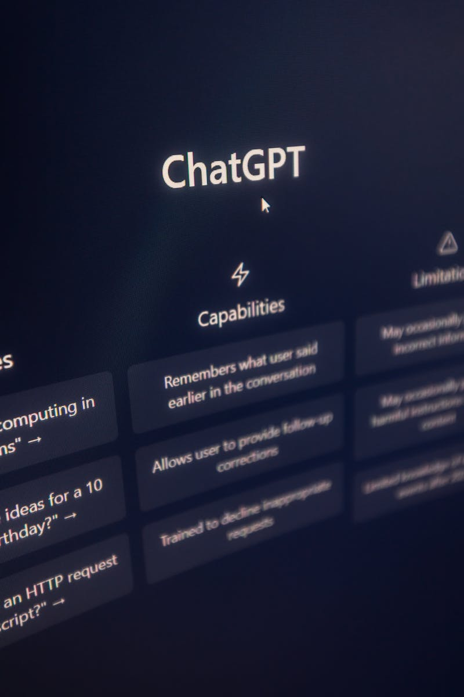
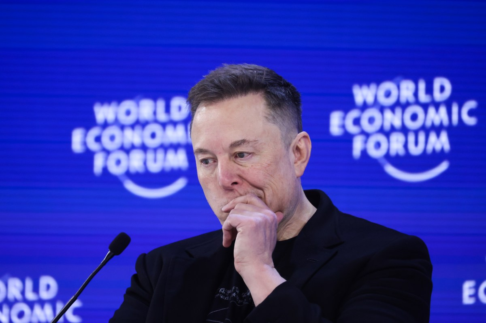
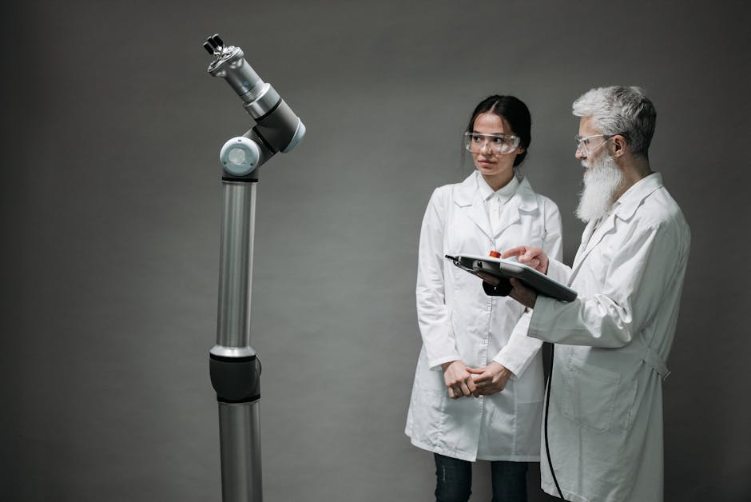
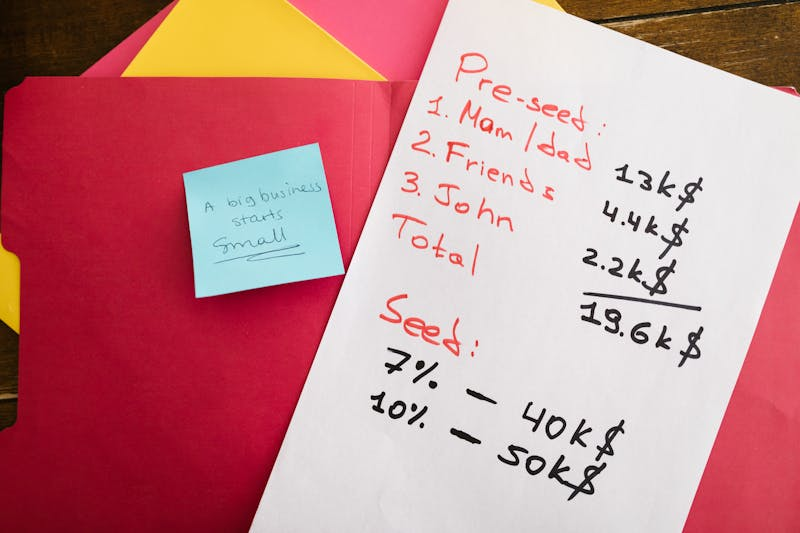
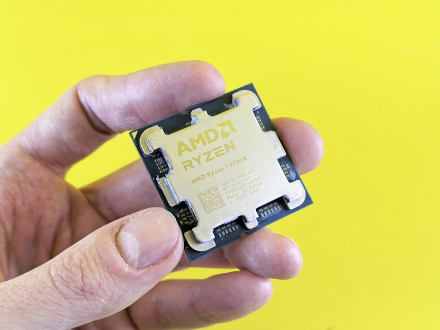
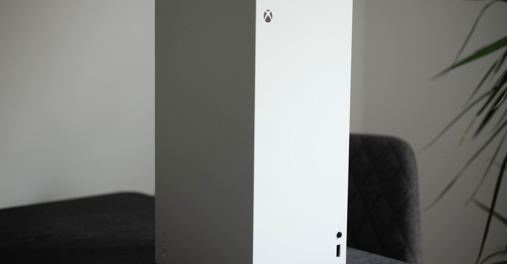
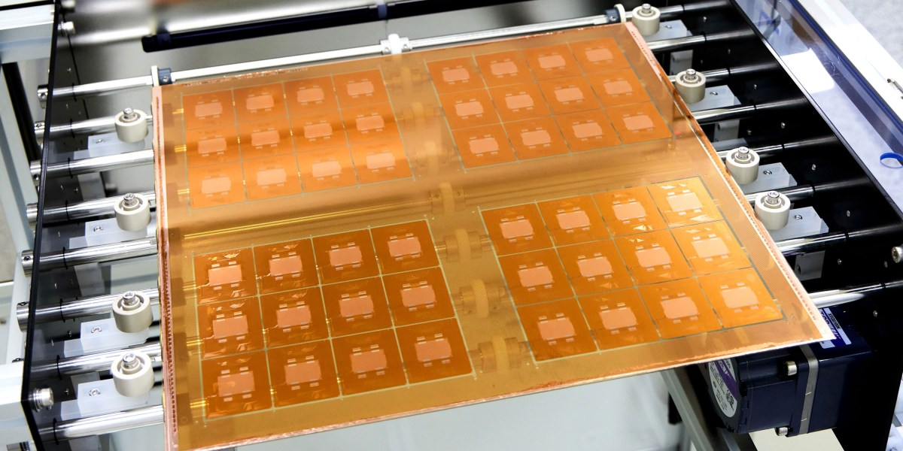
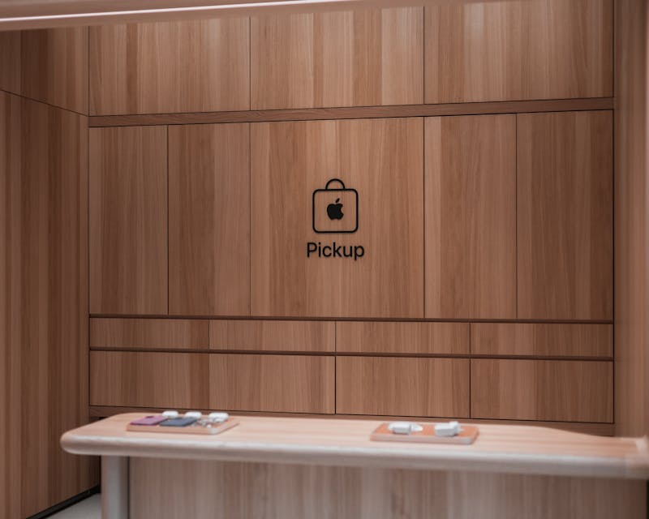

AI DAILY
AI 行业日报
2026年3月14日 · 精选 10 条
01行业动态
Meta计划大规模裁员，或影响20%以上员工
据报道，Meta正在筹划新一轮大规模裁员，可能波及公司20%以上的员工。官方尚未确认裁员具体日期和最终规模。
裁员的直接动因是AI基础设施投资的持续攀升。Meta同时认为，AI辅助工具已经让部分岗位的人工效率大幅提高，冗余人力的削减势在必行。
INSIGHT
一边花几百亿建数据中心，一边裁掉五分之一的人。AI投资的账单，正在由员工来分摊。当"用AI替代人"不再是愿景而是裁员理由，每一家科技公司都该想想——下一个被替代的部门，离自己有多远。
02产品发布
Claude百万token上下文窗口上线，取消长文附加费

Anthropic宣布Claude Opus 4.6和Sonnet 4.6正式开放完整的100万token上下文窗口，且以标准价格提供，不再收取长上下文附加费。
定价方面，Opus 4.6为每百万token输入$5/输出$25，Sonnet 4.6为$3/$15。所有上下文长度均适用完整速率限制，不做降级处理。
INSIGHT
百万token窗口从"实验功能"变成"标配"，还取消了附加费——上下文长度的价格战已经打响。对开发者来说，一次塞进整个代码库做分析不再是奢侈品。接下来看Gemini和GPT怎么跟。
03人事变动
xAI从Cursor挖走两位核心负责人，11位创始人仅剩2位

马斯克旗下xAI从AI编程助手Cursor挖走Andrew Milich和Jason Ginsberg两位核心负责人，二人将直接向马斯克汇报。马斯克在X上称"xAI第一次没造好，正在从头重建"。
xAI最初的11位联合创始人目前仅剩2位（Manuel Kroiss和Ross Nordeen）。此前一个月内，11名高级工程师和两位联合创始人先后离职。FT报道称SpaceX和Tesla高管已介入评估员工。
INSIGHT
三年换掉9位联合创始人，再从外面抢人补血。AI编程工具的营收潜力，已经大到让xAI愿意推倒重来。但"从头重建"第二次了——问题到底出在产品还是管理，马斯克或许该先想清楚。
04融资收购
李飞飞World Labs完成10亿美元融资，估值50亿

李飞飞创立的World Labs宣布完成10亿美元新一轮融资，投后估值约50亿美元。成立仅2年，估值从10亿飙至50亿，一年翻了4倍。
本轮由设计软件巨头Autodesk领投2亿美元，英伟达与AMD罕见联手参投。公司核心技术方向是"空间智能"——用大型世界模型（LWM）生成符合物理规律的3D环境，直接服务于具身机器人训练。
INSIGHT
英伟达和AMD同时掏钱——两家芯片公司通常在对方的融资里都不会出现。空间智能让GPU的需求故事从"训练文本"扩展到了"模拟物理世界"。对机器人行业来说，虚拟训练场的门票终于有人在卖了。
05融资收购
杨立昆AMI获10.3亿美元种子轮，欧洲最大AI种子融资

"深度学习三巨头"之一杨立昆（Yann LeCun）联合创立的AI公司AMI完成10.3亿美元种子轮融资，投前估值35亿美元，创下欧洲AI种子轮纪录。
AMI不走大语言模型路线，专注"世界模型"——通过视频和空间数据训练AI理解物理环境。投资方阵容包括贝索斯家族基金、软银亚洲、英伟达、丰田创投、淡马锡等。总部巴黎，纽约、蒙特利尔、新加坡设分部。
INSIGHT
同一天，李飞飞和杨立昆各拿10亿美元，赌注都是"世界模型"。超过13亿美元在一周内涌入这条赛道。LLM打字聊天的故事讲了三年，资本已经开始为"让AI走进物理世界"下注了。
06市场数据
寒武纪首次实现年度盈利，净赚20.59亿元

国产AI芯片龙头寒武纪（688256.SH）披露年报，首次实现年度盈利，全年净利润20.59亿元。这是公司自2020年上市以来首次扭亏。
盈利拐点的背景是国产算力需求的爆发式增长。在美国持续收紧芯片出口管制的环境下，国内互联网和云计算厂商加速转向本土AI芯片供应链。
INSIGHT
连亏四年后突然赚了20亿。芯片出口管制收紧了供应链，反而给本土厂商送来了订单。不过，能不能在技术代际中站稳，比一年的利润数字重要得多。
07政策监管
小红书率先打击AI托管账号，主流平台首个出手

小红书发布治理公告，严禁利用AI工具模拟真人、自动生成内容或虚假互动。借助OpenClaw等Agent工具运营的AI托管账号已开始渗透内容社区，小红书是主流平台中首个明确规制的。
处罚措施分梯度执行：偶发使用AI代发的给予警告和限流；完全由AI托管注册、发布、互动的账号直接封禁。此前小红书已封禁超1200万个虚假营销账号。
INSIGHT
龙虾热降温后，第一个被清算的不是技术本身，而是用Agent伪装成真人做内容的灰色产业链。AI可以辅助创作，但不能替代创作者——这条线画在哪里，每个平台迟早都得回答。
08行业动态
Uber创始人Kalanick创立机器人公司Atoms，进军采矿和物流
Uber创始人Travis Kalanick宣布成立新公司Atoms，将原有的幽灵厨房公司CloudKitchens并入，业务覆盖食品、采矿和运输三大领域的专用机器人开发。
Kalanick透露即将收购自动驾驶公司Pronto（由前Uber同事Anthony Levandowski创立），他已是Pronto最大投资人。Kalanick明确表示不做人形机器人，"专用机器人有大量的工业级机会"。
INSIGHT
从幽灵厨房到采矿机器人，Kalanick的路线倒是清晰——不做人形，只做能立刻干活的专用机器。在人形机器人还在实验室摔跤的阶段，直接切入矿山和物流的工业场景，可能反而是更务实的入口。
09技术突破
玻璃基板AI芯片走向量产，Absolics今年启动商业化

韩国公司Absolics已在美国建成专用工厂，计划今年启动玻璃基板的商业化量产。玻璃基板用于连接多颗硅芯片的封装层，可解决传统有机基板在高负载下热变形导致的良率问题。
Intel也在推进下一代芯片封装中的玻璃基板方案。AMD高级研究员指出，随着AI负载飙升和封装尺寸扩大，"翘曲"已成为高性能计算的关键瓶颈，玻璃是目前最有前景的解决路径。
INSIGHT
人类造了几千年的玻璃，现在要用它做AI芯片的地基。芯片性能的下一个跃升，瓶颈不在晶体管，而在把芯片粘在一起的那层材料。听起来不性感，但封装技术正在成为硅谷的新军备竞赛。
10政策监管
苹果中国区App Store佣金降至25%，3月15日生效

苹果宣布自3月15日起下调中国区App Store佣金：标准佣金从30%降至25%，自动续费订阅（第一年后）从15%降至12%。开发者无需重新签署条款即可享受新费率。
对比在欧盟持续多年的拉锯战，苹果在中国几乎没有公开博弈就直接降价。腾讯、网易、百度均回应称此举"有助于构建更开放的平台环境"。苹果上一财季中国区iPhone营收同比增长16%。
INSIGHT
在欧盟吵了三年不让步，在中国悄无声息就降了5个点。市场够大的时候，监管甚至不需要开口。对开发者来说，5%的差额直接变成利润——但别忘了，美国本土的30%依然纹丝不动。
由 Zayen知览 整理 · 构建者视角